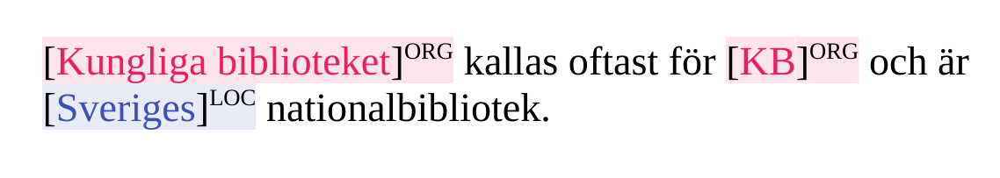
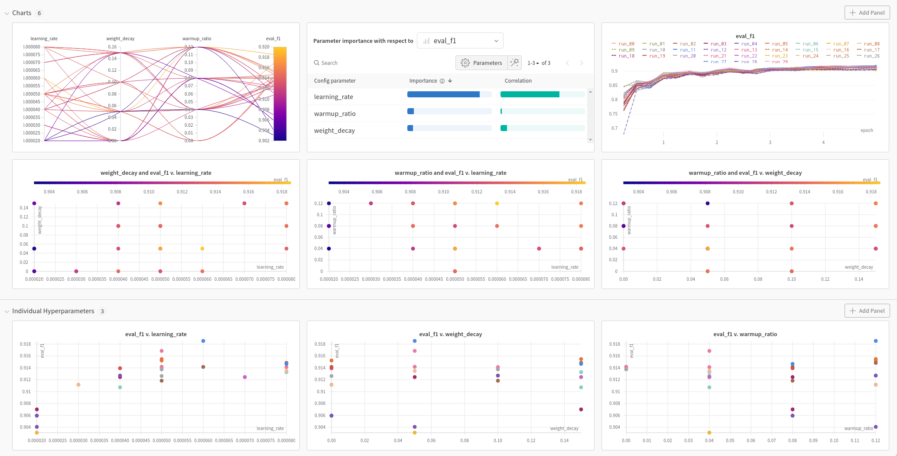
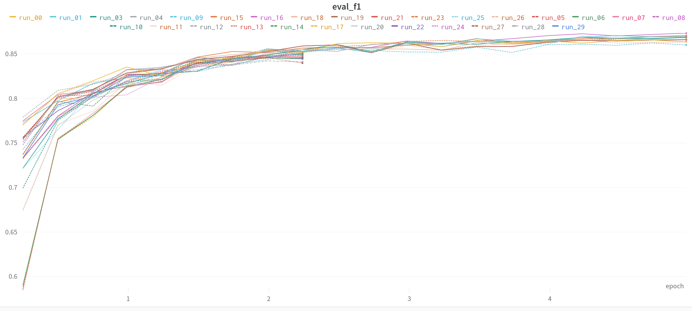

We present a remix of the venerable SUC 3.0 dataset for Swedish Named Entity Recognition (NER), and explore the effect of Hyper Parameter Optimization (HPO) for this task and dataset using our Swedish BERT model KB-BERT. We publish the data with a balanced train-development-test split using both manually and automatically annotated tags as a huggingface 🤗 dataset at https://huggingface.co/datasets/KBLab/sucx3_ner.

Figure 1: A simple NER example with three entities of two types.
Named Entity Recognition (NER), the task of automatically recognizing named entities, such as persons, companies, organizations, etc., is a staple Natural Language Processing (NLP) application. For Swedish, the Stockholm Umeå Corpus (SUC) has been the biggest resource for training NER models, containing more than 30,000 sentences with manually annotated named entities and part-of-speech (POS) tags. Additionally, Språkbanken has further enhanced the corpus with additional syntactic annotations and alternative annotations for NER, both created automatically. This enhanced version of the corpus is called SUCX 3.0. The new named entities largely match the manually annotated ones, use however slightly different categories and introduce two new categories for measurements and time. These new entity annotations are done by a rule-based NER system, creating regular and predictable annotations. A comparison of the entity categories is given below.
| Manually Annotated | Automatically Annotated |
|---|---|
| person | PRS |
| place | LOC |
| inst | ORG |
| work | WRK |
| product | OBJ |
| animal | PRS |
| event | EVN |
| myth | PRS |
| - | MSR |
| - | TME |
| other | - |
With large transformer language models (LM) such as BERT becoming the de-facto standard for most NLP tasks, they have also shown their worth for somewhat simpler tasks such as NER.
In order to compare the performance of various models, it is common in NLP practice to create a canonical split of the training data into training-, development-, and test-data, that everyone uses to train and evaluate their models to provide a fair comparison. While this practice comes with a heap of problems, it is nonetheless an easy way to quickly compare models with the same setup to give an intuition about their performance. We therefore split the SUC 3.0 corpus into these three parts at random, while keeping the distribution of sentences with and without annotations, and the number of named entities per category the same across the three splits.
The original SUC 3.0 corpus uses XML to structure its various types of annotations. We use a much friendlier json-based format that only contains the sentence split into tokens, the POS annotations, and the NER annotations in the BIO format.
e245ac6c-e24b4fe4
[ "I", "dag", "är", "han", "ingenjör", "på", "vetenskapsakademins",
"kemisk-tekniska", "institution", "i", "Vilnius", "." ]
[ "PP", "NN", "VB", "PN", "NN", "PP", "NN", "JJ", "NN", "PP", "PM", "MAD" ]
[ "B-TME", "I-TME", "O", "O", "O", "O", "O", "O", "O", "O", "B-LOC", "O" ] The data and its variations can be downloaded either with git or directly as a huggingface 🤗 dataset here https://huggingface.co/datasets/KBLab/sucx3_ner.
The original annotations of SUC are sometimes criticized to be somewhat inconsistent compared with other datasets (should titles be included in the named entity: kungen [Waldemar Atterdag] vs. [kung Carl Gustaf]), to contain needlessly specific categories (animal, myth), and a dangerously confusing (for a machine) other category. In some instances one would therefore prefer the tags automatically annotated by the tagger, over the manual annotations.
In our first dataset variation we only take sentences with annotations, which do not contain the other category, and where the manual and automatic annotations match according to the mapping above. The new measurement (MSR) and time (TME) annotations are included as well. This means that this new dataset is somewhat smaller, as all sentences where the annotations did not match for each token are removed.
Due to the custom in Swedish (and a lot of other European languages), to write named entities with a leading capital letter, NER systems quickly learn to rely on this simple feature. This improves performance as it is a clear indicator, when the data consists of properly formatted text, but leads systems to near absolute failure, when the data does not use case, as is often the case in web-text resources or chat.
We therefore also add a completely lower-cased (uncased) version of the dataset, and a cased-uncased-mixed version, that can be used to train and evaluate systems that are supposed to handle more noisy data. The new dataset variations uses the suffix "_lower" at the sentence-id, to indicate that the sentence has been lower-cased. This allows users that wish to train and/or evaluate a model on a dataset where each sentence exists twice, cased and uncased, by simply combining the instances of each dataset into a new one.
While we already achieve good performance with our KB-BERT model finetuned to do NER, we want to see if this can be improved by choosing a different set of hyper-parameters. With Hyper-Parameter Optimization (HPO) methods we can test combinations of different values for a chosen set of hyper-parameters that we believe can impact the performance of our final NER system.
First we use the standard set of parameters of the huggingface 🤗 training API to create our baselines. We refer to the manually annotated tags as original (org) and the automatically annotated ones as simple. The measurement used for NER is F1-score, a measure that combines (for each tag) both the precision (to annotate only when it truly is of some type) and recall (to annotate all instances of some type).
Each column illustrates one setting of NER tag & case type with batch size 64 and standard hyperparameters.
| org/cased | org/uncased | org/mixed | simple/cased | simple/uncased | simple/mixed | |
|---|---|---|---|---|---|---|
| F1-Dev | 0.8901 | 0.8683 | 0.866 | 0.9359 | 0.912 | 0.9111 |
| F1-Test | 0.8901 | 0.867 | 0.8687 | 0.9346 | 0.9017 | 0.9118 |
While there are many hyperparameters that one can vary, we only vary the learning rate, the weight decay, and the warmup ratio, three closely interconnected training parameters. The hyperparameter space that is shown below, was initially determined through inspiration from published related work and adapted after initial experiments.
The learning rate controls how much parameters are changed at every optimization step. Weight decay denotes a parameter that controls the impact of the regularizing L2-norm, favouring models with weights closer to zero. Finally, the warmup ratio controls the length of a warmup period during training in which the learning rate is increased to its initial maximum, aiming to avoid instability during early updates when the model weights are not yet aligned and the learning rate is too large.
Original Hyperparameters:
Learning Rate: 5e-5
Weight Decay: 0.0
Warmup Ratio: 0.0Hyperparameter Search Space:
Learning Rate: [2e-5, 3e-5, ..., 8e-5]
Weight Decay: [0.00, 0.05, 0.10, 0.15]
Warmup Ratio: [0.00, 0.04, 0.08, 0.12]Choosing which hyperparameters to use when training machine learning models often requires a good understanding of the model, the dataset, but also the impact of each of the parameters as well, and how they are connected to each other. Additionally to that, a certain experience is needed as well, and the knowledge of the dark arts of optimization: specific parameter settings that generally work well out of the box, without necessarily being published in some way. For the HPO experiments we used the ray tune library, which is easily integrated within the huggingface 🤗 ecosystem.
But even then, there are simply too many possible settings that one can reasonably test manually while making informed decisions based on previous results. One way to solve this is by using grid-search, a method that simply checks every combination of hyperparameters. If the search space is too large, one can instead only search a random sub-space with random search. The following figure illustrates some ways of visualizing the results of hyperparameter optimization, which is useful to gain intuition of the hyperparameter behaviors.

Figure 2: Weights and biases overview over the results from an HPO experiment with the simple lower mix variant of the dataset.
While more advanced methods such as ASHA, BOHB, and PBT are applicable in our setting (and were tested to some degree), it is sufficient to employ random search when choosing a discrete set of values for each hyperparameter, instead of letting the algorithms explore the search space on their own.
The more advanced HPO algorithms excel in different settings and can provide more efficient optimization. For example, ASHA and BOHB are both scalable and robust and can rapidly search through a large hyperparameter space by heavily utilizing early termination of non-promising runs. Furthermore, Bayesian Optimization (BO) models estimate the objective function and can draw informed samples of hyperparameter configurations, yielding successively better samples throughout the HPO session. While BO and early stopping sound promising, they possess the most value with a large number of runs and when early iterations of training consistently indicate end-of-run performance. In our case, we used a limited number of runs and searched for hyperparameters that clearly do not benefit from early stopping. For instance, a low learning rate with a large warmup ratio might perform poorly after training only for an epoch but may result in good performance after the full run.
The figure below demonstrates the early stopping behavior used in ASHA, terminating the lowest performing runs after roughly 2 epochs. Note that mechanisms as early stopping makes it difficult to visualize results and gain intuition about hyperparameters, as the final F1-scores become strongly biased towards runs that make it through the early phases of training.

Figure 3: The validation F1 scores for an HPO session using ASHA, searching hyperparameters for the original lower case variation of the dataset.
DeepMind’s PBT proved highly resource-demanding in our experiments and showed little to no performance gain. Increasing the population size and tweaking with other settings may yield a strong hyperparameter schedule if one has access to compute and wants to push the most out of a model/dataset. We did not investigate this further. Our experiments showed no significant advantage to using these advanced methods over random search.
We also conducted some modest experiments tuning the attention dropout rate, hidden dropout rate, and random seed as well, together with the more advanced HPO methods. Those results indicated that we can squeeze out a small amount of performance through more intricate HPO, but the procedure becomes expensive and prone to overfitting on the validation set without observing any performance gains on the test set.
We report our results using random search with 30 trials training on both the original and simple tags. For each tag-family we train the taggers on cased, uncased, and a mixed data set, while evaluating on all three development and test sets plus an additional set where only the named entity has been lower-cased. The columns labelled uncased-cased-both and ne-lower-cased-both denote data sets, in which every sentence appears both cased and uncased.
Most notably in these results is the performance of a system trained on regular cased data, when evaluated on uncased or partially lowercased data. At the same time we see that the system trained on a mix of cased and uncased data performs only slightly worse than their pure counterparts on the pure evaluation sets, while clearly outperforming them on the mixed evaluation sets.
| Tag Family | Trained on | HPO Alg | cased | uncased | uncased-cased-mix | uncased-cased-both | ne-lower | ne-lower-cased-mix | ne-lower-cased-both |
|---|---|---|---|---|---|---|---|---|---|
| Original | cased | RS | 0.8951 | 0.4067 | 0.7054 | 0.6987 | 0.4110 | 0.7045 | 0.6985 |
| Original | uncased | RS | 0.7847 | 0.8713 | 0.8278 | 0.8293 | 0.8695 | 0.8263 | 0.8285 |
| Original | uncased-cased-mix | RS | 0.8821 | 0.8573 | 0.8702 | 0.8698 | 0.8504 | 0.8671 | 0.866 |
| Simple | cased | RS | 0.9345 | 0.3037 | 0.7035 | 0.6974 | 0.3038 | 0.6995 | 0.6941 |
| Simple | uncased | RS | 0.8361 | 0.9157 | 0.8753 | 0.8774 | 0.9154 | 0.8754 | 0.8773 |
| Simple | uncased-cased-mix | RS | 0.9275 | 0.9078 | 0.9185 | 0.9177 | 0.9029 | 0.9155 | 0.9153 |
| Tag Family | Trained on | HPO Alg | cased | uncased | uncased-cased-mix | uncased-cased-both | ne-lower | ne-lower-cased-mix | ne-lower-cased-both |
|---|---|---|---|---|---|---|---|---|---|
| Original | cased | RS | 0.8978 | 0.4053 | 0.6940 | 0.7000 | 0.4103 | 0.6924 | 0.6998 |
| Original | uncased | RS | 0.7811 | 0.8656 | 0.8248 | 0.8245 | 0.8649 | 0.8245 | 0.8242 |
| Original | uncased-cased-mix | RS | 0.8833 | 0.8523 | 0.8661 | 0.8680 | 0.8489 | 0.8650 | 0.8663 |
| Simple | cased | RS | 0.9304 | 0.2963 | 0.6940 | 0.6929 | 0.2902 | 0.6879 | 0.6861 |
| Simple | uncased | RS | 0.8299 | 0.9075 | 0.8687 | 0.8702 | 0.9074 | 0.8685 | 0.8702 |
| Simple | uncased-cased-mix | RS | 0.9219 | 0.8988 | 0.9083 | 0.9104 | 0.8950 | 0.9064 | 0.9085 |
In order to see how much HPO actually helps for this task we compare with our unoptimized baseline systems. Each column illustrates one setting of tag & case type with the performance difference after HPO: F1(HPO) - F1(baseline)
| org/cased | org/uncased | org/mixed | simple/cased | simple/uncased | simple/mixed | |
|---|---|---|---|---|---|---|
| F1-Dev | +0.005 | +0.003 | +0.0042 | -0.0014 | +0.0037 | +0.0074 |
| F1-Test | +0.0077 | -0.0014 | -0.0026 | -0.0042 | +0.0058 | -0.0035 |
Unfortunately these differences are not what we hoped for, pointing to either a bad choice of hyperparameters and values to optimize or the stability of the model being trained regardless of the chosen hyperparameters (up to a certain degree of reasonable values). One such hyperparameter might be the warmup ratio, given that the model is already stable and is only being finetuned to a relatively simple task. We speculate that a more consistent gain in validation set performance could be achieved by taking the stochastic elements into account, i.e. running each experiment with multiple seeds, which argues for the insignificance of the HPO results.
| Tag Family | Trained on | HPO Alg | learning rate | weight decay | warmup ratio |
|---|---|---|---|---|---|
| Original | cased | RS | 7e-05 | 0.15 | 0.04 |
| Original | uncased | RS | 5e-05 | 0.10 | 0.08 |
| Original | uncased-cased-mix | RS | 8e-05 | 0.15 | 0.12 |
| Simple | cased | RS | 5e-05 | 0.05 | 0.04 |
| Simple | uncased | RS | 8e-05 | 0.05 | 0.04 |
| Simple | uncased-cased-mix | RS | 6e-05 | 0.05 | 0.12 |
We publish two models for our simple tags without BIO-encoding, trained on cased data and mixed cased-uncased data data for anyone to try, with more models to follow. If you feel that the model underperforms, feel free to continue training it on the validation and test data, or your own personal data. Let us know how the models perform in your projects and how you improved them.
We have taken the venerable SUC 3.0 dataset and given it a little refresher for people wanting to use its named entity annotations for training and evaluating NER taggers. We hope that the new format and its availability via the huggingface 🤗 ecosystem, together with a suggested train-development-test split will encourage more people to evaluate their models on this task, simply as a downstream finetuning task for large language models or for small specialist models trained to only do NER. With our little excursion to hyperparameter optimization we have learned to use the existing tools to easily find a better fitting set of hyperparameters, while also realizing that the results do not necessarily have to be better than when using the standard set of parameters.
We gratefully acknowledge the HPC RIVR consortium (https://www.hpc-rivr.si) and EuroHPC JU (https://eurohpc-ju.europa.eu) for funding this research by providing computing resources of the HPC system Vega at the Institute of Information Science (https://www.izum.si).